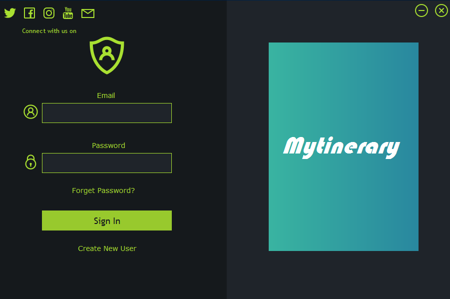
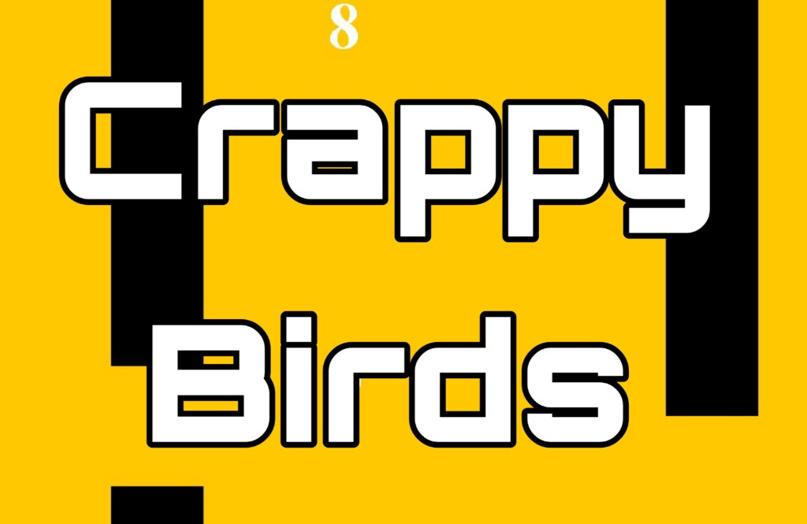
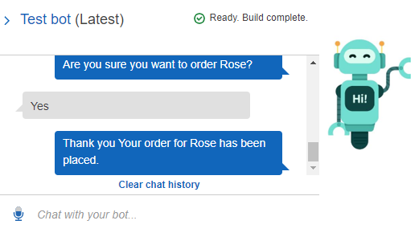
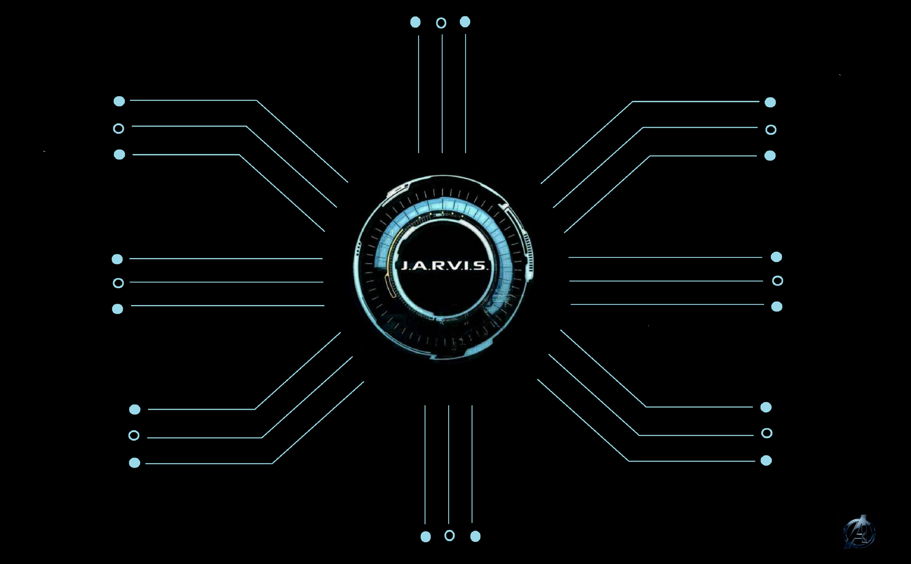
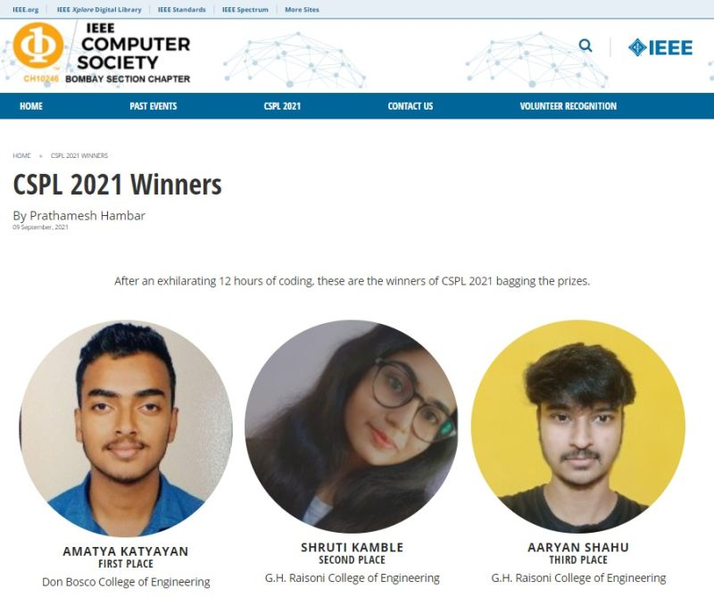

I am a Robotics and AI graduate student at Arizona State University with experience across software engineering, applied AI, robotics education, and research. My work spans computer vision, autonomous robotics, deep learning, React/Spring Boot platforms, and real-world technical training. I am currently focused on building reliable intelligent systems that connect AI models with practical robotics and software applications.
Robotics, Computer Vision, and Intelligent Systems
Amatya Katyayan
Robotics & AI Graduate Student | Software Engineer
I build intelligent systems across robotics, computer vision, machine learning, and production software.
M.S. Robotics and Autonomous Systems, AI Track @ Arizona State University
About
Building practical AI systems with strong engineering fundamentals
Education
M.S. in Robotics and Autonomous Systems
Artificial Intelligence Track
Arizona State University, Tempe, AZ
Expected May 2027
GPA: 4.22 / 4.00
Foundation
B.E. in Computer Engineering
Goa University, Goa, India
May 2022
86.48%
Featured Projects
Selected work in robotics, computer vision, and applied AI
Featured
Computer Vision
Autonomous Tic-Tac-Toe Playing Robot
Built a system that detects human-drawn X/O symbols using OpenCV and contour-based vision modeling, then responds with AI-driven moves through the Dobot arm.
OpenCV
Contour Modeling
Game AI
Dobot SDK
Featured
Robotics
Object Detection and Classification using Dobot & YOLO
Created an automated pick-and-place robot using YOLOv5 for real-time object classification and robotic sorting through motion planning.
YOLOv5
Object Detection
Motion Planning
Robotic Sorting

Featured
Autonomous Robotics
AI-Driven Maze Solving Robot
Developed an AI system that perceives maze structures via a top-mounted camera and guides the Dobot arm to trace the solution path using perception and control integration.
Perception
Control Integration
Path Tracing
Robotics
Featured
AI + IoT
Smart Agriculture System using AI and IoT
Designed an adaptive farm-assist tool that analyzes sensor data for personalized crop insights. Funded by Goa State Innovation Council and published in IEEE Xplore.
AI
IoT
Sensor Data
Precision Agriculture
Project Brief
Autonomous Tic-Tac-Toe Playing Robot
Focused on human-robot interaction with vision-based symbol recognition and robotic actuation. The system interprets hand-drawn game states and translates AI-selected responses into physical arm movement.
Project Brief
Object Detection and Classification using Dobot & YOLO
Combined real-time visual detection with robot motion planning to automate object classification and sorting, bridging learned perception with a physical manipulation workflow.
Project Brief
AI-Driven Maze Solving Robot
Built around top-view scene understanding and coordinated control, this system converts observed maze geometry into a drawable solution path for robotic execution.
Project Brief
Smart Agriculture System using AI and IoT
This work combines data-driven crop support, applied AI, and field-oriented product thinking, and later evolved into a published research contribution in smart agriculture analytics.
Earlier Software Projects
Earlier application and software builds
AI Application
AI-Powered Sentiment Analyzer
Interactive sentiment analysis tool built to explore AI-assisted hiring workflows and text analysis.
AI Assistant
A.G.R.O. the AI powered Chatbot
Python chatbot for customer support and guidance using speech recognition, analysis, and synthesis.

Desktop App
Mytinerary
To-do desktop application with an interactive GUI secured by email and password authentication.

Java Game
Crappy Birds
Arcade-style Java game inspired by Flappy Birds with obstacle avoidance gameplay.
C++ Game
War Zone
Obstacle-avoidance game built with C++ and Turtle graphics in an endless arcade format.

AWS Prototype
Chatbot (AWS)
Built with Amazon Lex, SES, and Cognito for deployment across social platforms and mobile apps.
Full-Stack App
Library Management System
System with admin login, student signup, and end-to-end book CRUD workflows.

Voice Experience
J.A.R.V.I.S. Trivia
Marvel-themed Alexa trivia experience designed as a voice-first interactive skill.
Skills
Technical strengths across intelligent systems and software delivery
Programming
Languages
Python
C++
Java
MATLAB
JavaScript
AI / ML
Modeling and learning
TensorFlow
PyTorch
Scikit-learn
Reinforcement Learning
MDPs
Computer Vision
Visual perception
OpenCV
YOLOv5
Object Detection
Image Segmentation
Robotics
Applied robotics
ROS
Dobot SDK
pydobot
pydobotplus
Kinematics
Motion Planning
Web & Backend
Production delivery
React
Spring Boot
REST APIs
Tools
Workflow and visualization
Git
GitHub
Matplotlib
OpenCV Visualization
Data Plotting
Experience
Industry and training experience grounded in practical delivery
Technical Trainer, 6 Technical Training Regiment, Indian Army
- Led technical training programs in AI, cybersecurity, and databases for Army personnel.
- Designed hands-on learning modules integrating applied robotics and real-world scenarios.
- Mentored trainees to improve operational readiness and technical confidence.
Software Developer, Persistent Systems
- Designed and deployed enterprise-grade React and Spring Boot platforms, reducing manual reporting workload by 40%.
- Built REST APIs for AI-based skill-job matching and hiring analytics.
- Collaborated with cross-functional engineering and product teams to deliver production-grade, data-driven systems under tight timelines.
Research
Published work in AI for agriculture decision support

IEEE Xplore, 2022
Design of Smart Agriculture Systems using Artificial Intelligence and Big Data Analytics
Research focused on AI and big data analytics for smart agriculture systems and crop decision support.
Achievements
Recognition, student leadership, and public-facing technical work
Competition
IEEE CSPL 2021 - First Place
Innovation
Texas Instruments India Innovation Contest - Quarter Finalist
Academic
College Topper, Goa University
Campus Role
Student Experience Assistant, ISSC, ASU
Supported international arrivals, airport reception, and onboarding.
Outreach
Campus Ambassador, TCS
Creator
Tech YouTube Channel Creator
Creator of the “Amatya Katyayan” tech YouTube channel.
Teaching and Workshops
Applied technical training
Hands-on seminars and workshops across AI, robotics, cybersecurity, and emerging technology topics.
View more highlights
Competitive Coding
Programming league and hackathon record
Competition history spanning IEEE CSPL, Tech Coders, Code Heist, and Newton School contests.
See coding highlightsContact
Open to robotics, AI, and software engineering conversations
Best way to reach me
Use the contact form below or connect with me on LinkedIn for professional outreach.
GitHub
github.com/amatya27Portfolio
amatya27.github.ioLatest Updates
Recent activity on LinkedIn
I share project demos, research milestones, technical workshops, and professional updates on LinkedIn.
What I share
Projects, research, and milestones
Project demos
Research updates
Workshop highlights
Professional milestones
For the most current updates, LinkedIn is where I share ongoing work, milestones, and professional activity.
Contact Form
Send a message
Use this form for opportunities, research discussions, collaboration, or professional outreach.
Resume Request
Request the latest resume
Share a few professional details and the latest resume will open after submission.